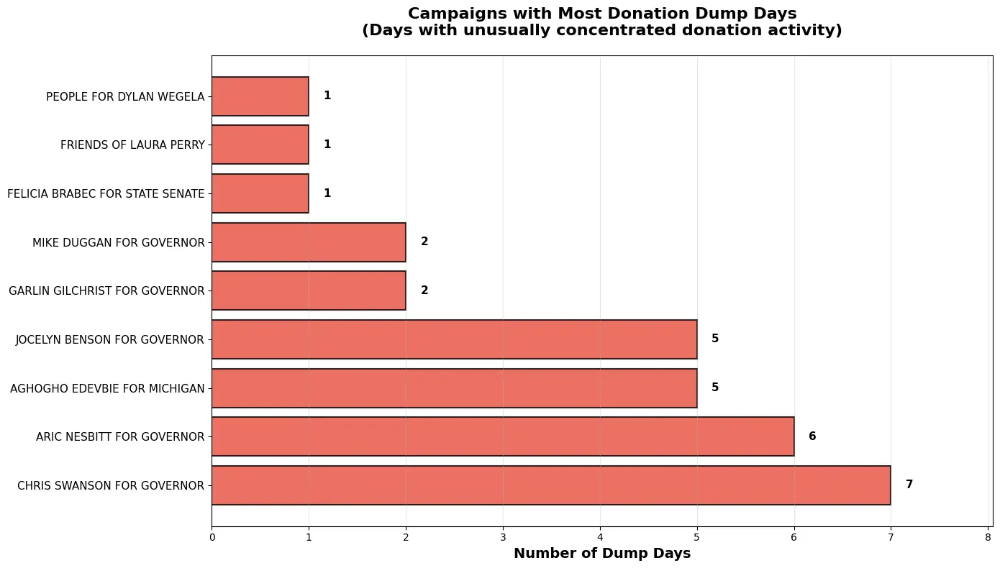
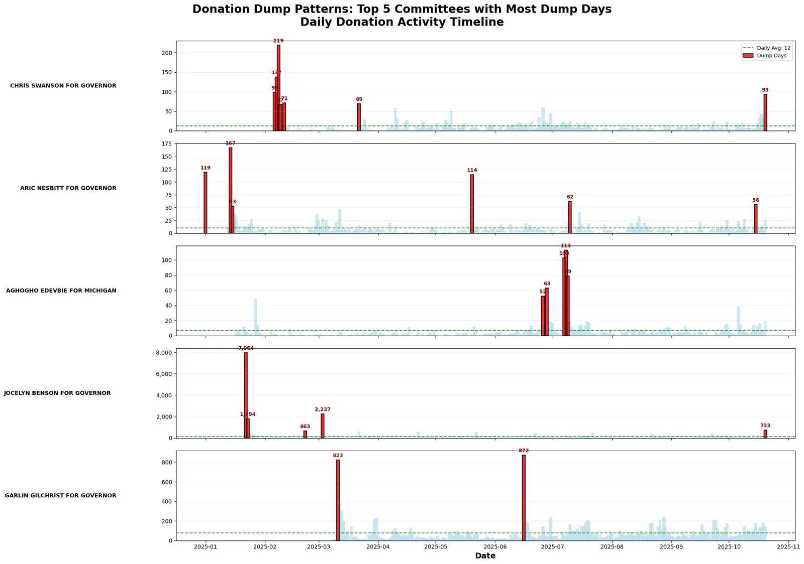
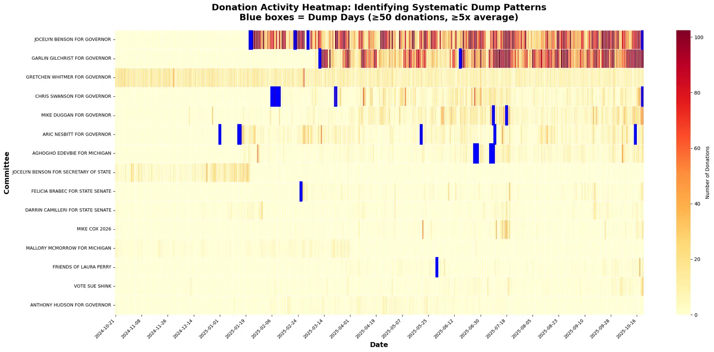
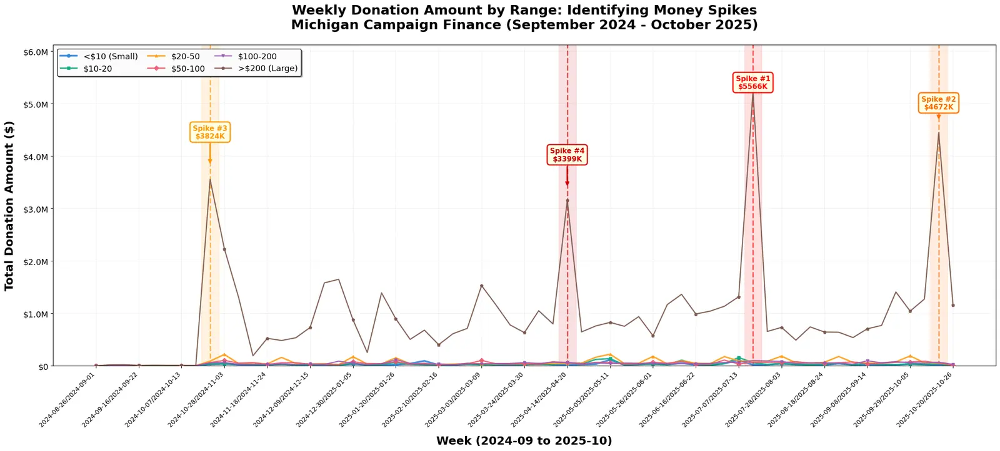

The question
The Data Dive gives teams one day with a real public dataset. Ours was Michigan campaign finance. We chose the descriptive track and focused on three things: how much of the money comes from small versus large donors, when donations spike, and whether some campaigns receive donations in unusual bursts.
Data and methods
- Cleaned more than 500,000 donation records from the contribution tables with pandas and NumPy.
- Grouped donations into amount bands, from under $10 to over $200, and tracked counts and dollar totals by week from September 2024 to October 2025.
- Defined a donation dump as a day when a committee received at least 50 donations and at least 5 times its own daily average, then counted dump days for each campaign.
- Charted the results in Matplotlib and Seaborn: weekly time series, a committee-by-day heatmap and summary charts.
What I did
I led the team of five and wrote most of our Python code.
What we found
- Small donations drove the volume: 96% of donations were under $50. The dollars told a different story, with most of the money coming from a small number of large gifts.
- The busiest week had 34,423 donations. The biggest weekly dollar spike was about $5.6 million, in July 2025.
- We found 30 dump days across 9 campaigns. The largest was 7,964 donations in one day. The median dump day had 101 donations, about 10.7 times the campaign's usual level.








These are hackathon charts, made in a few hours. I left them as they were on the day.